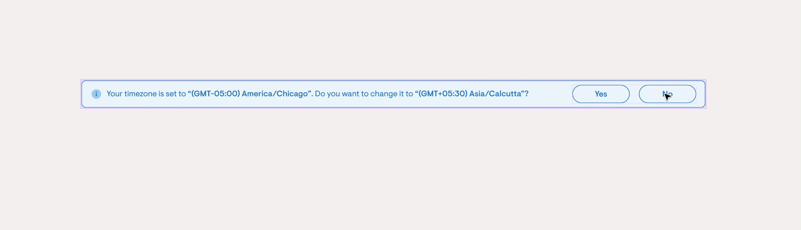
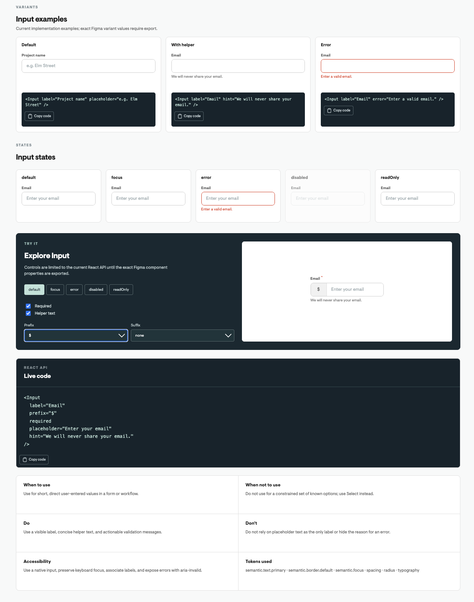
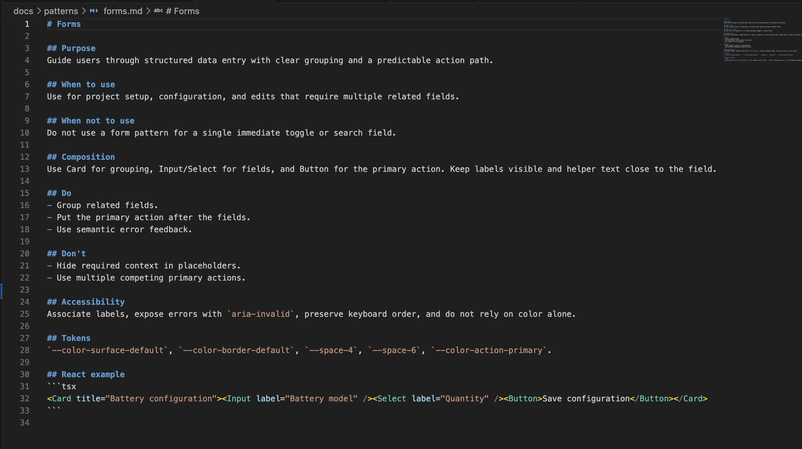

Building a design system that humans and AI can build with.
my contribution
the need
Current design system was not scalable. Designers had to detach components to use them.
5 different whites, 12 different greys. No clear source of truth for color decisions.
AI tools were being adopted across PM and UX teams for rapid prototyping and stakeholder reviews. But without a shared design language in code, every AI generated prototype looked different from the actual product.

How might we create a system that makes consistency the default, instead of something teams have to maintain manually?
the audit
I audited the existing product, Figma library, and component patterns to identify gaps.
Colors · Typography · Spacing · Radius
Missing states · Duplicated patterns · Inconsistent variants
Disconnected tokens · Hard-to-scale components · Limited documentation
12+ greys → consolidated palette
Multiple spacing values → defined spacing scale
Different buttons → standardized variants
Detached instances → reusable components
The goal was to reduce the number of design decisions teams had to make repeatedly.
the shift
I wanted Solaris to become more than a Figma library. The same system should be understandable and usable by designers, engineers, PMs, and AI agents.
the system
The system was structured around three layers:
Brand defines what we have. Semantic tokens define what it means. Components define how the system behaves.
the ai question
AI can generate a UI in seconds. But without product context, it also invents new colors, new spacing, new components, and new interaction patterns. So the design system needed to become machine-readable, not just human-readable.
I built a living React application that mirrors the Figma library. Every component in Solaris exists in code with its full set of variants, states, and configurations. This playbook serves as the single reference for designers, engineers, and AI agents.
↓
↓
↓
brand.blue.500
↓
semantic.action.primary
↓
button.primary.background
<Button variant="primary">
Save
</Button>
the ai context layer
I created structured Markdown documentation that captures not just what a component looks like, but how and when it should be used.
Documentation became a contract between design, code, and AI.
the system architecture
Different people consume a design system differently. A PM shouldn't need to read Markdown. An AI agent shouldn't rely on visual browsing. So Solaris has two consumption layers built from the same source.
A living React application where every Figma component is replicated in code with its full set of variants. Designers and PMs can browse components, see usage patterns, and understand what the system offers without reading documentation files.
Makes things discoverable.
Structured Markdown documentation that captures what a component looks like, when to use it, and how it behaves. Each file follows a consistent schema so AI agents can parse and apply the rules without ambiguity.
Makes things machine-readable and precise.


The Playbook makes things discoverable. The Markdown files make things precise. Together, they let every builder, human or AI, speak the same product language.
what I learned
The most valuable part of Solaris wasn't creating reusable components. It was creating a shared language for making product decisions.
Together, they create a system that can scale beyond the designer.
Solaris evolved from a Figma library into a shared language for designing, building, and scaling Solargraf, with a foundation that AI can understand and build with.